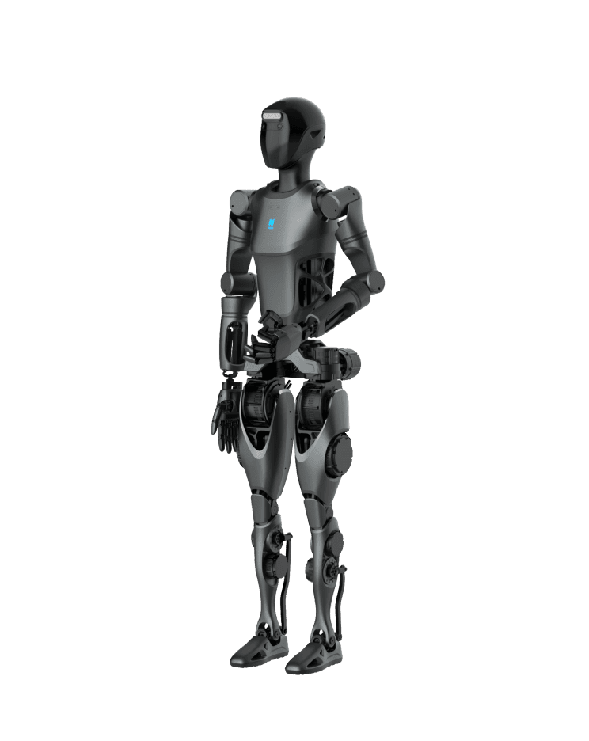

Humanoid · China · Strong signal · #20 R-Score rank
PUDU D9 Robot Profile
Object manipulation, service robotics, customer engagement
Robot Snapshot
Core commercial and technical signals for PUDU D9.
Commercial Access
Purchase path, regional access, and import readiness.
Türkiye Market Access
Local sales path, distributor status, import readiness, and partner pipeline.
PUDU D9 facts
- Company
- Pudu Robotics →
- Status
- Prototype / commercial path
- Use case
- Object manipulation, service robotics, customer engagement
- Height
- 170 cm
- Runtime
- Battery: 15 Ah / 0.72 kWh
- Official source
- Open official source →
Robologai view
PUDU D9 is tracked as a Humanoid robot for Object manipulation, service robotics, customer engagement. Robologai scores it by maturity, deployment signal, price clarity, media proof, and official source strength.
79/100 Strong signal
Maturity 3/5
Price clarity 2/5
Commercial 70
Mobility 86
AI signal 70
Strong signal
Readiness Breakdown
How Robologai scores PUDU D9 across market-readiness signals.
Data Quality
Source confidence, pricing clarity, and deployment proof.
Source Notes
PUDU D9 source trail.
Deployment Context
What PUDU D9 signals about the physical AI market.
Compare Next